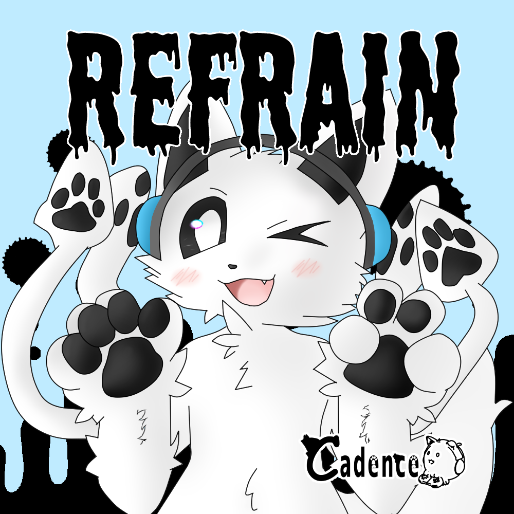

REFRAIN アルバムのDL

「REFRAIN」をお買い上げいただきありがとうございます。
ダウンロードするボタンを開くと、新たにタブが開き、そこから自動でダウンロードされます。
ダウンロードできないなどの問題が発生した場合は、こちらのフォームまで問い合わせお願いします。
TXT形式を選択すると、歌詞がDLされます。
備考 (Notes)
- いかなる理由にかかわらず許可無くWebへのアップロードしたり、動画サイトでフルバージョンで公開する行為を固く禁じます。
- 再生できないなどの不具合が発生した場合は、フォームまでお問合せください。